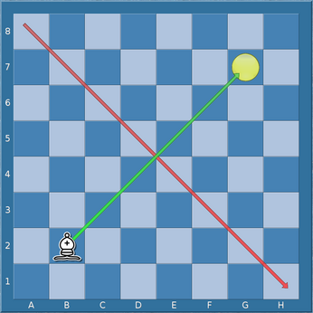

♖a8 an der Hauptdiagonalen.
Einige Transformationen für Figurenbezeichner werden hier definiert.
Eine diagonale Spiegelungstransformation, angewendet auf einen Figurenbezeichner, reflektiert jedes Feld auf das Feld gegenüber der Hauptdiagonalen.
|
|
Diagonale Spiegelung von ♖a8 an der Hauptdiagonalen.
|
Beispielsweise ist die diagonale Spiegelung von [Aa][a-h1-2,f6,h7]
gleich [Aa][a-b1-8,f6,g8].
Eine gegendiagonale Spiegelungstransformation, angewendet auf einen Figurenbezeichner, reflektiert jedes Feld auf das Feld gegenüber der a8-h1-Diagonalen.
|  |
Gegendiagonale Spiegelung von ♗b2 an der a8-h1-Diagonalen.
|
Beispielsweise ist die gegendiagonale Spiegelung von ♖a8 gleich
♖a8. Die gegendiagonale Spiegelung von
[♗♝][a1-8], kennzeichnend einen Läufer auf der a-Linie,
ist [♗♝][a-h8], kennzeichnend einen Läufer auf der achten
Reihe.
Eine vertikale Spiegelungstransformation, angewendet auf einen
Figurenbezeichner, reflektiert jedes Feld auf das Feld gegenüber der
vertikalen Halbierungslinie des Schachbretts. Beispielsweise ist die vertikale
Spiegelung von Uf6, kennzeichnend eine Figur auf f6, gleich
Uc6.

|
Vertikale Spiegelung von ♝f6 an der vertikalen Halbierungslinie.
|
Eine horizontale Spiegelungstransformation, angewendet auf einen
Figurenbezeichner, reflektiert jedes Feld auf das Feld gegenüber der
horizontalen Halbierungslinie des Schachbretts. Beispielsweise ist die horizontale
Spiegelung von Uf6 gleich Uf3.

|
Horizontale Spiegelung von ♝f6 an der horizontalen Halbierungslinie.
|
Eine diedrische Transformation, angewendet auf einen Figurenbezeichner,
ist eine Spiegelungstransformation gefolgt von einer Spiegelungstransformation
oder der identischen Transformation (es können statt der ersten
Spiegelungstransformation auch Rotationen von 90, 180, oder 270 Grad eingesetzt
werden). Es gibt 8 unterscheidbare diedrische Transformationen des
Schachbretts. Beispielsweise ist das Resultat einer Anwendung aller
diedrischen Transformationen auf den Figurenbezeichner
♕c2 die Menge der 8 Figurenbezeichner ♕c2,
♕b3, ♕b6, ♕c7, ♕f7,
♕g6, ♕g3 und ♕f2.

|
Diedrische Transformationen von ♕c2, beispielsweise:diagonale Spiegelung + diagonale Spiegelung (nach c2) diagonale Spiegelung + identische Transformation (nach b3) diagonale Spiegelung + horizontale Spiegelung (nach b6) horizontale Spiegelung + identische Transformation (nach c7) horizontale Spiegelung + vertikale Spiegelung (nach f7) gegendiagonale Spiegelung + identische Transformation (nach g6) gegendiagonale Spiegelung + horizontale Spiegelung (nach g3) vertikale Spiegelung + identische Transformation (nach f2) |
Eine einschrittige rechtsschiebende Transformation, angewendet auf einen Figurenbezeichner, verschiebt jedes Feld in der Feldermenge ein Feld nach rechts. Ist ein Feld bereits auf dem rechten Brettrand, so wird es von der Feldermenge entfernt. Ein Feld auf dem linken Brettrand ist auch wieder in der neuen Menge enthalten.
Beispielsweise ist die einschrittige rechtsschiebende Transformation von
♕d4 gleich ♕e4. Die einschrittige rechtsschiebende
Transformation von ♕[c2,h2] ist ♕d2. Die
einschrittige rechtsschiebende Transformation von ♕[a2,c2,h2] ist
♕[a2,b2,d2].
Die Definitionen der einschrittigen linksschiebenden Transformation, einschrittigen hochschiebenden Transformation, sowie der einschrittigen runterschiebenden Transformation, sind analog zur einschrittigen rechtsschiebenden Transformation. Die Randfelderbesonderheiten sind in der enstprechenden Veränderung zu sehen.
Eine Rechtswärtstransformation ist eine Hintereinanderausführung von
Null oder mehr einstelligen rechtsschiebenden Transformationen. Beispielsweise
ergibt die drei aufeinanderfolgenden einstelligen rechtsschiebenden
Transformationen umfassende Rechtswärtstransformation von ♕a4
die Menge ♕[a4,b4,c4,d4], denn die Felder am linken Brettrand
sind immer auch in der neuen Menge enthalten. Das Resultat der Anwendung dieser
Rechtswärtstransformation auf ♕d4 ergibt ♕g4.
Die Definitionen der Linkswärtstransformation, Hochwärtstransformation, und Runterwärtstransformation sind entsprechend.
Eine horizontale Verschiebungstransformation ist entweder eine Linkswärtstransformation oder eine Rechtswärtstransformation. Eine vertikale Verschiebungstransformation ist entweder eine Runterwärtstransformation oder eine Hochwärtstransformation.
Eine Verschiebungstransformation ist eine Transformationen, die als
Folge von Null oder mehr horizontalen Verschiebungstransformationen,
gefolgt von Null oder mehr vertikalen Verschiebungstransformationen,
ausgedrückt werden kann. Es gibt exakt eine Verschiebungstransformation,
die ein gegebenes Feld auf ein anderes gegebenes Feld verschiebt. Eine
mögliche Verschiebung von ♕[b3,c4] ist ♕[d4,e5].
Eine Farbwechseltransformation, angewendet auf einen Felderbezeichner,
wechselt die Farbe der Figurenmenge des Felderbezeichners, und wendet dann
eine horizontale Verschiebung auf den Figurenbezeichner an. Beispiel:
die Farbwechseltransformation angewendet auf [♖♝♟][a2,c2],
entweder ein weißer Turm, ein schwarzer Läufer, oder ein schwarzer Bauer auf
c2 oder a2, ergibt die Menge [♜♗♙][a7,c7].